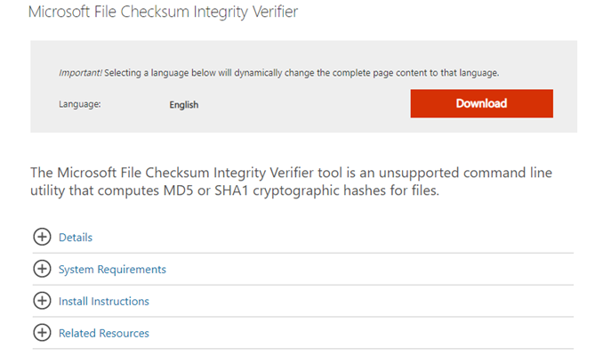

A Beginner's Guide to Cyber Security

This article looks at the fundamentals of cybersecurity, including basic terms and
terminologies of security, the importance of data, attributes of data. and the CIA triad,
confidentiality, integrity, and availability. It also looks at cybersecurity domains and
different types of encryption techniques, like asymmetric and symmetric encryption.
We will be covering the following topics:
What are Cyber, Cybersecurity, and Cyberspace?
Terms and Terminologies of Security
Cyber Security Domains
Network Models
Cyber Security Certifications
Cyber Threats
What is meant by the term “Cyber”?
Cyber means anything that is digital. It can be your devices that are performing the
digital computation. Anything that is related to the Internet falls under the category of
Cyber.
How big is cyberspace ?
While Cyberspace should not be confused with the internet, the term is used to
represent identities or events that take place in the communication process itself. For
example, think of a website, it also exists in CyberSpace. Whether you share a post,
upload a picture, or even send a message, all these social interactions exist in Cyber
Space. This Cyber Space is expanding not in minutes but in seconds. These all events
are taking place not on their physical locations but "in cyberspace". You can see an
image below consisting of various digital devices that are connected through the
internet. Their whole communications exist in cyberspace.
What is Cybersecurity?
The term cybersecurity is used to refer to the security offered through online services to
protect your online information.
Cybersecurity refers to the technologies and processes designed to protect
computers, networks, and data from unauthorized access, vulnerabilities and
attacks delivered via the Internet by cybercriminals
Cybersecurity is important for network, data and application security.
The Need for Cyber Security
Cybersecurity is necessary because it helps secure data from threats such as
data theft or misuse. It also safeguards your system from viruses
With an increasing amount of people getting connected to the Internet, security
threats that cause massive harm are increasing as well.
Terms and Terminologies of Security
Security vs Information Security
Security can be any physical security, it includes everything in security and Information
Security can also be any digital security and is bound to information.
IT Security vs Network Security
Information Security(IT) is of wider scope includes web, network anything related to IT,
and network security is bounded to network.
System Security includes security of
devices like mobile phones, computers, etc.
Cyber Security vs IT Security
Cyber Security includes digital security and IT security includes cybersecurity and also
includes the physical security of systems highest which cybersecurity doesn’t include
physical security of systems.
Note
InfoSec is short for Information Security and Pentest is short of Penetration Testing.
Domains of Cyber Security
Below are the domains of Cybersecurity:
1. Access Control Systems and Methodology
2. Telecommunications and Network Security
3. Business Continuity Planning and Disaster Recovery Planning
4. Security Management Practices
5. Security Architecture and Models
6. Law, Investigation, and Ethics
7. Application and Systems Development Security
8. Cryptography
9. Computer Operations Security
10.Physical Security
Access Control Systems and Methodology
The main purpose of Cyber Security is to protect your data. So first, we will get to know
more about Data and the various access control systems and methodology.
Six Dimensions of Data Quality Assessment
A Data Quality(DQ) Dimension is a recognized term used to describe the feature of data
that can be assessed or measured against defined standards in order to measure the
quality of data.
The six core data quality dimensions are:
1. Consistency
2. Completeness
3. Correctness
4. Accessibility
5. Timeliness
6. Accuracy

States of Data
Understanding the different states of digital data can be helpful for you to select the
different sorts of security measures and encryption techniques to apply to the data.
Here we will discuss three states of data.
Data at rest/storage
Data at rest refers to the data that has been stored on some sort of physical medium or
backup medium like data stored on hard disks or even in mobile devices. What makes
its data at rest that data is in an inactive form and is not currently being transmitted or
processed.
Data in motion/transmission
The second phase of data is in motion. Data in motion is currently transmitting on a
network or is sitting on a computer's RAM ready to be read, updated, or processed. It
can be emails or data transferred through FTP or SSH.
Data in process
The third phase of data is in process or use. This state of data is not being stored
passively on a storage medium. This is the data that is being processed by one or more
applications. This is the data currently being generated, updated, appended, or erased.
CIA (Confidentiality- Integrity - Availability)
Confidentiality, Integrity, and Availability, known as the CIA triad, is a model designed to
guide policies for information security within an organization. We will look more in-depth
at each of the three.
Confidentiality
It ensures that computer-related assets are accessed only by authorized parties
sometimes called secrecy or privacy Measure undertaken to prevent sensitive
information from reaching the wrong people and making sure that an authorized
person can access it.
The technique used is Encryption
Encryption to ensure Confidentiality
Suppose we want the “HELLO”, we can apply encryption technique to replace every
alphabet of HELLO with its neighbor alphabet like H replace with I, E with F, etc which
makes the word not meaningful. Then we decrypt with the same technique used on
another side.
Bitlocker is a disk/drive-level encryption. We cannot apply BitLocker on file.
Windows use the NTFS file system. There is EFS(Encrypted File System)-File
Level Encryption. Right-click on file (Compress the contents in blue color).
Features of EFS
There are two colors that show encryption and decryption.
This whole process depends on Policies. To keep backup of data, when an employee
resigns, the company formats the system which also loses the BitLocker keys and other
stuff.
Types of Encryption
There are two top-level types of encryption, Symmetric and Asymmetric
Symmetric Encryption
Uses the Same Key to encrypt or decrypt data.
Consider a desktop password manager application. You enter your password
and they encrypted with your own personal key. When the data is to be retrieved,
the same key is used, and the data is decrypted
Asymmetric Encryption
Uses a Private key and Public Keypair
Either key can encrypt but a single key can’t decrypt its own decrypted data. To
decrypt, you need the paired key.
Asymmetric encryption is used for things like Transport Layer Security(TLS) used
in HTTPS and data signing
Access Controls
Access controls authenticate and authorize individuals to access the information they
are allowed to see and use.
1. Something you know - (you know passwords)
2. Something you are - (biometric scan)
3. Something you have - (ATM card)
4. Something you do - (signature style)
Integrity of Data
Integrity
It means that assets can be modified only by authorized parties or only in authorized
ways. Ensures that information is in a format that is true and correct to its original
purposes. It involves maintaining the consistency, accuracy, and trustworthiness of data
in its entire life cycle.
The technique used is Hash
Hash
Hash Calculator takes a file as input and applies algorithms. The purpose of hashing is
to show that the original file is not modified.
Let's have a practical implementation of hashing using the Microsoft File Checksum
Integrity Verifier. You can download it from the internet.

You need to open a command prompt in the directory where your file is located. We will
check the integrity of a text file. To apply this hashing technique:
fciv "filename with the extension" hashing algorithm => fciv readme.txt -sha1

Here you can see a Hash code generated of that file. Now we will modify the file by adding
some letters in the text file and will again apply the hashing technique on the same file.

Here, you can see the Hash Code has been changed. This shows that the file has been
modified and no longer in its original form. If we revert the changes that we made in the file and
again apply the hashing technique, let's see what happens.

Below, you can see a diagram where there is plaintext on which a hash function has been
applied. After applying the hash function, it generates a hashed text. This hashing technique is
also being used in Cyber Forensics.

Availability of Data
This means that assets are accessible to authorized parties at appropriate times. High
Availability (99.9%) where 0.1% is error rate and when increased 99.999 uptime 0.0001 error
rate. It is implemented using methods such as hardware maintenance, software patching, and
network optimization.
A classic example of a loss of availability to a malicious actor is a Denial of Service Attack
(DOS).
SLA
Service Level Agreement is a binding document. It is a commitment between a service provider
and a client. Particular aspects of service - quality, availability, responsibilities are agreed
between the service provider and service user If the service user doesn’t receive files in time
then service providers are fined.
Before discussing the types of DOS attacks, let's have a look at Ping Command.
Ping Command
Ping is a computer network administration software utility used to test the
reachability of a host on an Internet Protocol network. A simple way to verify that
a computer can communicate over the network with another computer or network
device
Ping 127.0.0.1 (127.0.0.1 is a loopback address)
Types of DOS Attacks
Will discuss a few of the DOS Attacks:
1. Ping of Death
2. Ping of Flood
3. Smurf Attack
4. Fraggle Attack
Ping of Death
A Ping of Death attack is a Denial of Service (DoS) attack, in which the attacker aims to
disrupt a targeted machine by sending a packet larger than the maximum allowable
size, causing the target machine to freeze or crash.
Ping of Flood
Ping flood, also known as ICMP flood, is a common Denial of Service (DoS) attack in
which an attacker takes down a victim’s computer by overwhelming it with ICMP echo
requests, also known as pings. Example: Education Board Website.
Fraggle Attack
A Fraggle attack is a type of DOS attack where the attacker sends a large number of
spoofed UDP traffic to a router's broadcast address within a network.